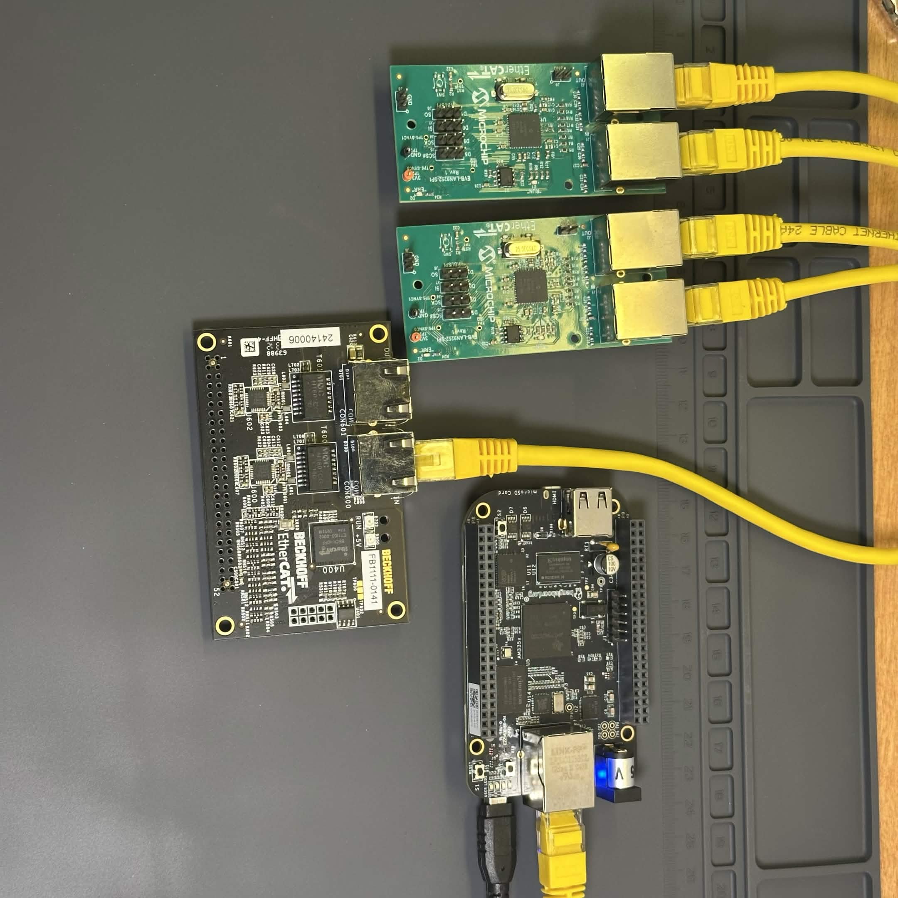

← All Projects
EtherCAT to CAN Bus Interface
Comms · HardwareAn ongoing learning project focused on EtherCAT — the high-speed industrial Ethernet fieldbus protocol used in precision motion control and robotics applications.
The hardware side centers on the LAN9252 EtherCAT slave controller chip, which I am using to design a custom EtherCAT slave node that bridges to CAN Bus — allowing EtherCAT masters to communicate with CAN-based actuators and sensors.
On the software side, I am using SOEM (Simple Open EtherCAT Master), an open-source EtherCAT master library, to develop and test a PC-based Ethernet master for validating the hardware design. This project is bridging my existing CAN-FD experience with the EtherCAT ecosystem.